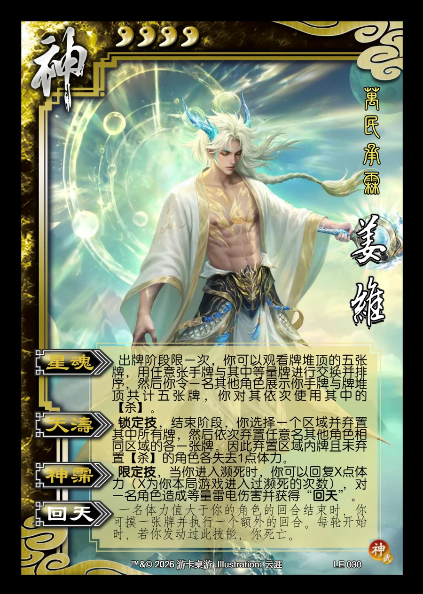

点击卡面查看大图
神
神姜维
♥4万民承霖
星魂
出牌阶段限一次，你可以观看牌堆顶的五张牌，用任意张手牌与其中等量牌进行交换并排序，然后你令一名其他角色展示你手牌与牌堆顶共计五张牌，你对其依次使用其中的【杀】。
天涛锁定技
锁定技，结束阶段，你选择一个区域并弃置其中所有牌，然后依次弃置任意名其他角色相同区域的各一张牌。因此弃置区域内牌且未弃置【杀】的角色各失去1点体力。
神霈限定技
限定技，当你进入濒死时，你可以回复X点体力（X为你本局游戏进入过濒死的次数），对一名角色造成等量雷电伤害并获得“回天”。
回天衍生
一名体力值大于你的角色的回合结束时，你可摸一张牌并执行一个额外的回合。每轮开始时，若你发动过此技能，你死亡。